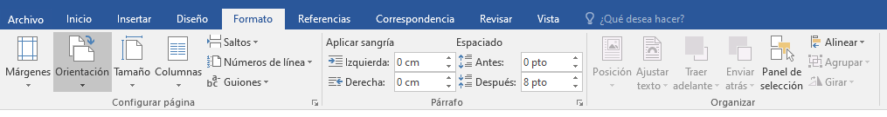
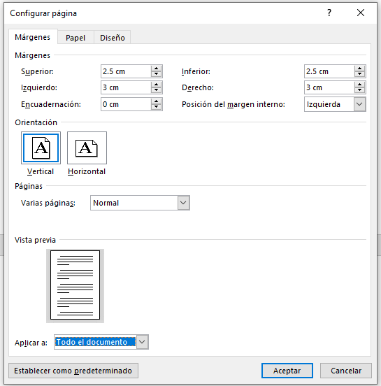
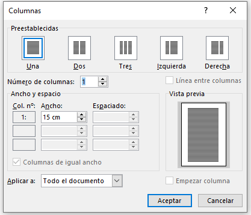

En esta sección, nos enfocaremos a algunas de las opciones disponibles en la Pestaña Formato o Diseño de Página (según la versión de Word).
.
GRUPO CONFIGURAR PÁGINA

Este grupo de herramientas nos sirven para establecer Márgenes, Orientación de página, Saltos de página, Tamaño de página, Números de línea, Columnas y Guiones. Su efecto se aplica a todo el documento o a una sección del documento, dependiendo de lo solicitado o lo que se tenga seleccionado.
Al hacer clic sobre el botón Márgenes, aparecen unos márgenes predeterminados. Si ninguno nos sirve, podremos definir unos desde la opción Márgenes Personalizados.
Para especificar el tamaño del papel, hacer clic en el botón Tamaño, se abre una lista de Tamaños predeterminados. Pero, al igual que en los márgenes, se puede personalizar el tamaño de la hoja, haciendo clic en la opción Más tamaños de papel.
Permitiendo un panel o cuadro de diálogo con más opciones relacionadas con el grupo en cuestión.

.
Por otra parte, en Word se pueden crear columnas de tipo periodístico para dividir el documento o una parte de este en varias partes (columnas).
Se pueden definir antes de escribir o seleccionando un texto ya definido en el documento.
Al hacer clic sobre el botón Columnas, aparecen unas predeterminadas. Si se desea realizar ajustes, entrar a la opción Más Columnas que nos permitirá elegir el ancho entre columnas, el espaciado entre columnas y definir otros elementos.
Aquí tienen a su disposición un vídeo que les muestra las distintas formas de trabajar con la opción de columnas.